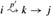
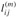
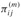

|
|
< Day Day Up > |
|
This section presents a dynamic-programming algorithm for the all-pairs shortestpaths problem on a directed graph G = (V, E). Each major loop of the dynamic program will invoke an operation that is very similar to matrix multiplication, so that the algorithm will look like repeated matrix multiplication. We shall start by developing a Θ(V4)-time algorithm for the all-pairs shortest-paths problem and then improve its running time to Θ(V3 lg V).
Before proceeding, let us briefly recap the steps given in Chapter 15 for developing a dynamic-programming algorithm.
Characterize the structure of an optimal solution.
Recursively define the value of an optimal solution.
Compute the value of an optimal solution in a bottom-up fashion.
(The fourth step, constructing an optimal solution from computed information, is dealt with in the exercises.)
We start by characterizing the structure of an optimal solution. For the all-pairs shortest-paths problem on a graph G = (V, E), we have proven (Lemma 24.1) that all subpaths of a shortest path are shortest paths. Suppose that the graph is represented by an adjacency matrix W = (wij). Consider a shortest path p from vertex i to vertex j, and suppose that p contains at most m edges. Assuming that there are no negative-weight cycles, m is finite. If i = j, then p has weight 0 and no edges. If vertices i and j are distinct, then we decompose path p into , where path p′ now contains at most m - 1 edges. By Lemma 24.1, p′ is a shortest path from i to k, and so δ(i, j) = δ(i, k) + wkj.
Now, let  be the minimum weight of any path from vertex i to vertex j that contains at most m edges. When m = 0, there is a shortest path from i to j with no edges if and only if i = j. Thus,
For m ≥ 1, we compute as the minimum of (the weight of the shortest path from i to j consisting of at most m - 1 edges) and the minimum weight of any path from i to j consisting of at most m edges, obtained by looking at all possible predecessors k of j. Thus, we recursively define
The latter equality follows since wjj = 0 for all j.
What are the actual shortest-path weights δ(i, j)? If the graph contains no negative-weight cycles, then for every pair of vertices i and j for which δ(i, j) < ∞, there is a shortest path from i to j that is simple and thus contains at most n - 1 edges. A path from vertex i to vertex j with more than n - 1 edges cannot have lower weight than a shortest path from i to j. The actual shortest-path weights are therefore given by
Taking as our input the matrix W = (wij), we now compute a series of matrices L(1), L(2),..., L(n-1), where for m = 1, 2,..., n - 1, we have . The final matrix L(n-1) contains the actual shortest-path weights. Observe that for all vertices i, j ∈ V , and so L(1) = W.
The heart of the algorithm is the following procedure, which, given matrices L(m-1) and W, returns the matrix L(m). That is, it extends the shortest paths computed so far by one more edge.
EXTEND-SHORTEST-PATHS(L, W) 1 n ← rows[L] 2 let be an n × n matrix 3 for i ← 1 to n 4 do for j ← to n 5 do 6 for k ← 1 to n 7 do 8 return L′
The procedure computes a matrix , which it returns at the end. It does so by computing equation (25.2) for all i and j, using L for L(m-1) and L′ for L(m). (It is written without the superscripts to make its input and output matrices independent of m.) Its running time is Θ(n3) due to the three nested for loops.
Now we can see the relation to matrix multiplication. Suppose we wish to compute the matrix product C = A · B of two n × n matrices A and B. Then, for i, j = 1, 2,..., n, we compute
Observe that if we make the substitutions
|
l(m-1) |
→ |
a, |
|
w |
→ |
b, |
|
l(m) |
→ |
c, |
|
min |
→ |
+, |
|
+ |
→ |
· |
in equation (25.2), we obtain equation (25.4). Thus, if we make these changes to EXTEND-SHORTEST-PATHS and also replace ∞ (the identity for min) by 0 (the identity for +), we obtain the straightforward Θ(n3)-time procedure for matrix multiplication:
MATRIX-MULTIPLY(A, B) 1 n ← rows[A] 2 let C be an n × n matrix 3 for i ← 1 to n 4 do for j ← 1 to n 5 do cij ← 0 6 for k ← 1 to n 7 do cij ← cij + aik · bkj 8 return C
Returning to the all-pairs shortest-paths problem, we compute the shortest-path weights by extending shortest paths edge by edge. Letting A · B denote the matrix "product" returned by EXTEND-SHORTEST-PATHS(A, B), we compute the sequence of n - 1 matrices
|
L(1) |
= |
L(0) · W |
= |
W, |
|
L(2) |
= |
L(1) · W |
= |
W2, |
|
L(3) |
= |
L(2) · W |
= |
W3, |
|
⋮ | ||||
|
L(n-1) |
= |
L(n-2) · W |
= |
Wn-1. |
As we argued above, the matrix L(n-1) = Wn-1 contains the shortest-path weights. The following procedure computes this sequence in Θ(n4) time.
SLOW-ALL-PAIRS-SHORTEST-PATHS(W) 1 n ← rows[W] 2 L(1) W 3 for m ← 2 to n - 1 4 do L(m) ← EXTEND-SHORTEST-PATHS(L(m-1), W) 5 return L(n-1)
Figure 25.1 shows a graph and the matrices L(m) computed by the procedure SLOW-ALL-PAIRS-SHORTEST-PATHS.
Our goal, however, is not to compute all the L(m) matrices: we are interested only in matrix L(n-1). Recall that in the absence of negative-weight cycles, equation (25.3) implies L(m) = L(n-1) for all integers m ≥ n - 1. Just as traditional matrix multiplication is associative, so is matrix multiplication defined by the EXTEND-SHORTEST-PATHS procedure (see Exercise 25.1-4). Therefore, we can compute L(n-1) with only ⌈lg(n - 1)⌉ matrix products by computing the sequence
|
L(1) |
= |
W, | ||
|
L(2) |
= |
W2 |
= |
W · W, |
|
L(4) |
= |
W4 |
= |
W2 · W2 |
|
L(8) |
= |
W8 |
= |
W4 · W4, |
|
⋮ | ||||
|
|
= |
|
= |
. |
Since 2⌈lg(n-1)⌉ ≥ n - 1, the final product is equal to L(n-1).
The following procedure computes the above sequence of matrices by using this technique of repeated squaring.
FASTER-ALL-PAIRS-SHORTEST-PATHS(W) 1 n ← rows[W] 2 L(1) ← W 3 m ← 1 4 while m < n - 1 5 do L(2m) ← EXTEND-SHORTEST-PATHS(L(m), L(m)) 6 m ← 2m 7 return L(m)
In each iteration of the while loop of lines 4-6, we compute L(2m) = (L(m))2, starting with m = 1. At the end of each iteration, we double the value of m. The final iteration computes L(n-1) by actually computing L(2m) for some n - 1 ≤ 2m < 2n - 2. By equation (25.3), L(2m) = L(n-1). The next time the test in line 4 is performed, m has been doubled, so now m ≥ n - 1, the test fails, and the procedure returns the last matrix it computed.
The running time of FASTER-ALL-PAIRS-SHORTEST-PATHS is Θ(n3 lg n) since each of the ⌈lg(n - 1)⌉ matrix products takes Θ(n3) time. Observe that the code is tight, containing no elaborate data structures, and the constant hidden in the Θ-notation is therefore small.
Run SLOW-ALL-PAIRS-SHORTEST-PATHS on the weighted, directed graph of Figure 25.2, showing the matrices that result for each iteration of the loop. Then do the same for FASTER-ALL-PAIRS-SHORTEST-PATHS.
Show how to express the single-source shortest-paths problem as a product of matrices and a vector. Describe how evaluating this product corresponds to a Bellman-Ford-like algorithm (see Section 24.1).
Suppose we also wish to compute the vertices on shortest paths in the algorithms of this section. Show how to compute the predecessor matrix Π from the completed matrix L of shortest-path weights in O(n3) time.
The vertices on shortest paths can also be computed at the same time as the shortest-path weights. Let us define  to be the predecessor of vertex j on any minimum-weight path from i to j that contains at most m edges. Modify EXTEND-SHORTEST-PATHS and SLOW-ALL-PAIRS-SHORTEST-PATHS to compute the matrices Π(1), Π(2),..., Π(n-1) as the matrices L(1), L(2),..., L(n-1) are computed.
The FASTER-ALL-PAIRS-SHORTEST-PATHS procedure, as written, requires us to store ⌈lg(n - 1)⌉ matrices, each with n2 elements, for a total space requirement of Θ(n2 lg n). Modify the procedure to require only Θ(n2) space by using only two n × n matrices.
|
|
< Day Day Up > |
|